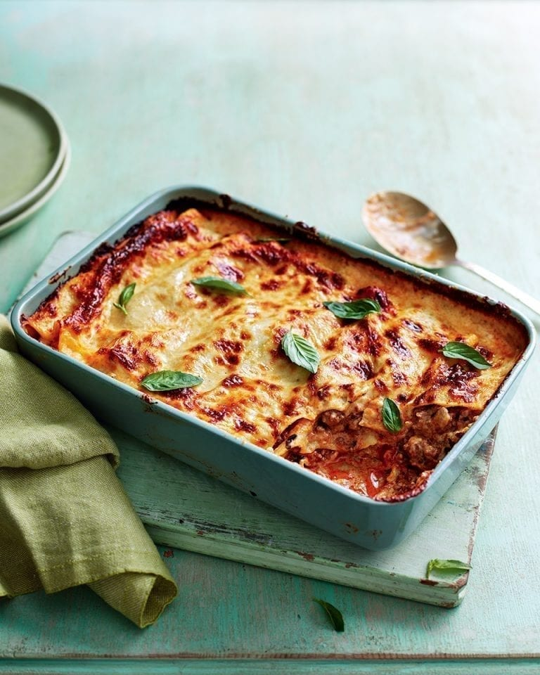

Creamy Lasagne!

The lasagne craze
Making a lasagne is a labour of love, one where the rewards are evident in every mouthful.
This classic lasagne recipe is hearty, comforting and will leave you wanting more.
Ingredients
For the meat sauce:
- 1 large celery stick, finely chopped
- 1 onion, finely chopped
- 2 garlic cloves, finely chopped
- 700g British free-range beef mince
- 2 tbsp tomato purée
- 230g tin chopped tomatoes
- 150ml good quality beef stock
- 1 tbsp finely chopped fresh oregano
- Small bunch fresh basil, leaves picked
For the béchamel sauce
- 60g unsalted butter
- 60g plain flour
- 700ml whole milk
- 80g parmesan, finely grated
- Pinch freshly grated nutmeg
Method
- Heat the oil in a large deep frying pan over a medium-high heat, then fry the prosciutto until crisp.
Transfer to a plate using a slotted spoon.
- For the meat sauce, add the celery and onion to the pan with a pinch of salt and pepper; cook until soft
(about 10 minutes). Add the garlic and cook for another minute. Add the mince and fry for 4-5 minutes,
breaking up with a wooden spoon, until browned. Stir in the tomato purée and chopped tomatoes; cook for
another minute. Add the stock and simmer for 30 minutes over a low-medium heat until the sauce has
thickened. Remove from the heat, season with salt and pepper, then stir in the fried prosciutto, chopped
oregano and most of the basil leaves.
- For the béchamel sauce, heat the butter in a medium heavy-based saucepan over a medium-high heat. Add the
flour and stir constantly for 3-4 minutes until the mixture starts to smell biscuity. Slowly pour in the
milk, whisking all the time, for 6-8 minutes until the sauce has thickened. Remove from the heat, stir in
20g of the parmesan and all the nutmeg, then season well with salt and pepper. Heat the oven to 200°C/180°C
fan/gas 6.
- To assemble, spread a little of the béchamel sauce over the base of the baking dish, then cover with
slightly overlapping lasagne sheets. Pour over a third of the remaining white sauce, sprinkle over a little
of the grated cheese and top with half the meat sauce. Cover with another layer of lasagne sheets, top with
half the remaining white sauce, then all the remaining red sauce. Add the final layer of lasagne sheets,
then spread with the rest of the white sauce. Scatter with the remaining grated cheese.
- Bake the lasagne for 35-40 minutes until golden and bubbling. Serve garnished with the remaining basil.
If you thought this was great, how about checking out the others...
Home